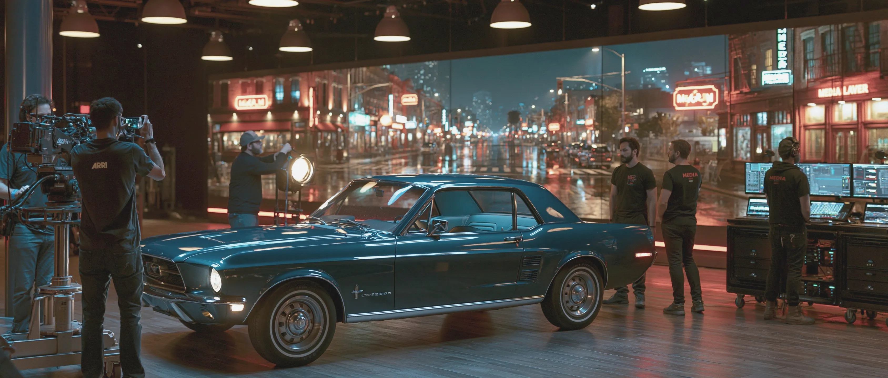
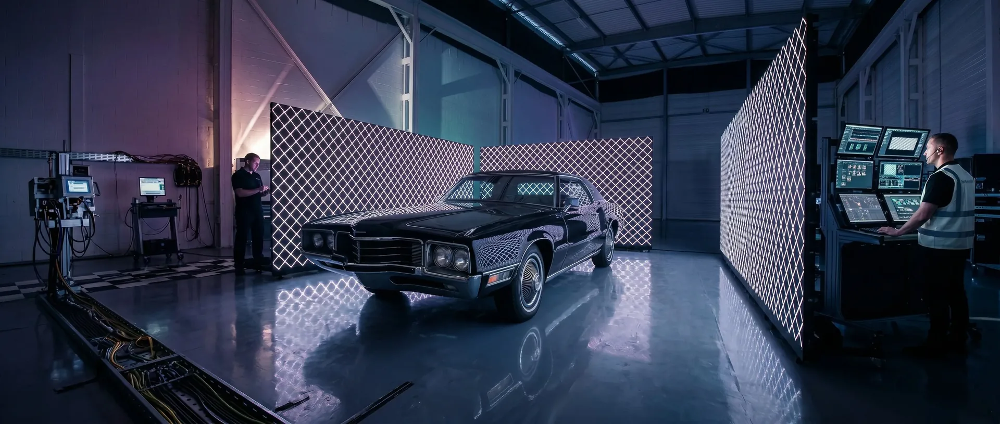

Driving Plates Calibrated colour and frame synced.

Cineva builds playback systems for car-on-stage work, matched to the way your shot is being captured. The car stays parked on the stage and the plate plays on the wall behind it, so the scene shoots in a controlled space instead of a moving rig on the road.
From single-wall setups to full wraps, we help productions run driving plates with less guesswork at the monitor and fewer surprises on the floor. You bring the car and the plate; we own the playback. Tell us the car, the stage, and the camera, and we will build the system around the day.
We own the playback.
A beautiful plate played back wrong still reads fake. A modest one handled properly disappears. The plate is yours; the playback is the part we own, and it is the part that decides whether the world outside the window looks real in the gate.
That means brightness matched to the LED wall, colour calibrated to your camera's science, and the move synced frame-accurate to the rig through timecode and genlock, so the background tracks the car instead of sliding against it. We run it off a prepped media server with the cues set and every asset loaded before day one, and a playback operator stays on the cart so a change is a recall, not a scramble.
Custom or stock.
You source the plate, and the call usually comes down to how much the world beyond the glass has to match your story. Commission a custom plate when the audience can place the road: a recognizable skyline, continuity with exteriors you already shot, a specific time of day or direction of light. Pull from a library when the window is motion, not a place, an anonymous highway or a blurred night city nobody needs to identify.
If you need a starting point, drivingplates.com is a solid ready-to-use library. Most days are a mix of the two, and the trick is grading them so the cut never betrays which is which. We break the decision down by shot in custom plate or stock, then build the playback around whatever you bring.
In camera, on the day.
The reason a car scene belongs on an LED wall rather than a green screen is reflection and eyeline. Glass, paint, a wet windshield, the actor's eyes: anything that mirrors the world has to carry the world, and on a wall it just does, because the world is there and finishes in camera. A busy reflection is exactly where a green-screen comp goes to die. When the background is flat and far off and never interacts with the car, green can still be the cheaper call, and we will say so. Green screen or volume?
Shooting two cameras on the same car at once is its own problem, because perspective is only correct for one tracked camera. Frame remapping sends each camera its own view so a coverage day does not break the wall. Tell us the car, the stage, and the camera package, and we will spec the build and run the day.
Common questions
Before you spec the plate.
Do you provide the plates or do we?
You source the plates. We can point you toward trusted partners and resources if you need a starting point, including drivingplates.com for a solid ready-to-use library.
How is sync maintained to camera?
Frame-accurate sync via timecode and genlock. The wall and camera run on the same heartbeat. No tearing, no drift, no artifacts in the gate. We're happy to work with your camera department pre-shoot to test system integration.
What's the colour pipeline?
DIT-compatible, Rec.709 and Rec.2020 supported, ACES-ready.